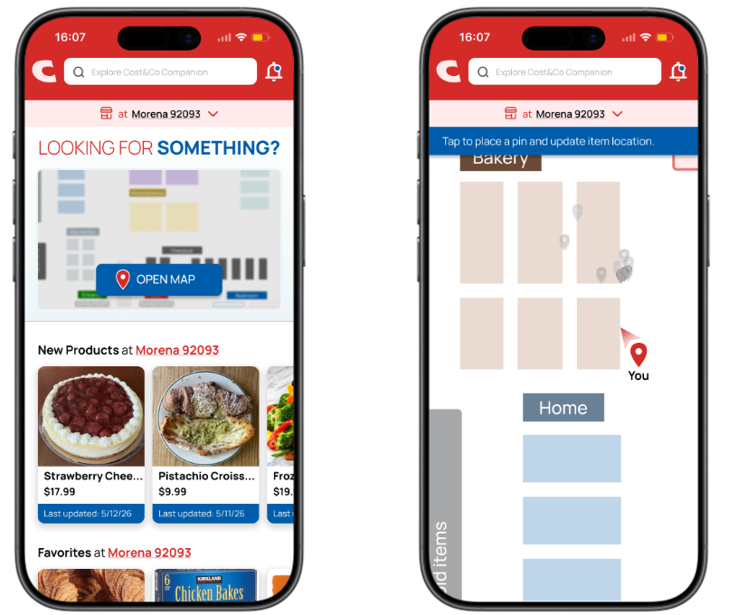
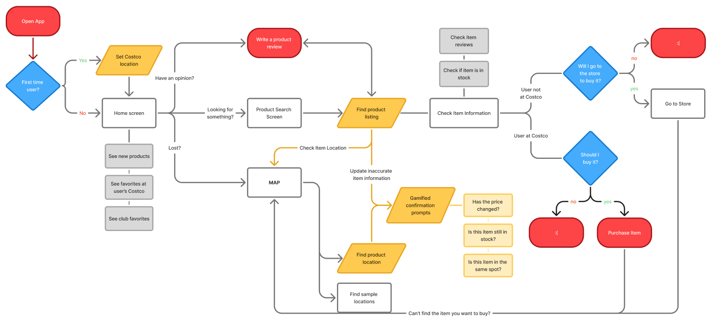

A community companion app that helps Costco shoppers find products as the warehouse keeps changing

Team
LivianneProduct Designer & Researcher
MagnoliaProduct Designer & Researcher
ValerieProduct Designer & Researcher
EricProduct Designer & Researcher
Skills
Contextual Inquiry, Information Architecture, Interaction Design, User Flows
Tools
Figma, Condes.io
Timeline
April 2026 - June 2026
Overview
Making Sense of Costco's Ever-Changing Experience
How might I help Costco shoppers navigate constantly changing warehouse environments without disrupting Costco's business model?
Costco's warehouse experience thrives on discovery, but constantly rotating inventory,
inconsistent layouts, and limited store information can make finding products frustrating. I designed a community companion app
that helps shoppers navigate, discover products, and make informed decisions through real-time member driven insights.
Research
9 shoppers, contextual interviews and field observation
Output
Cost&Co, a community-powered companion app
Focus
Wayfinding, product discovery, decision-making
Constraint
Preserve Costco's discovery-driven shopping model
The Challenge
Where Did It Go?
With limited signage, inconsistent product availability, and constantly shifting product locations, shoppers often rely on
memory and trial-and-error to locate products. This creates an unpredictable shopping experience that leads to unnecessary searching,
increases stress, and contributes to warehouse congestion.
Three things made products hard to find
Limited signage
Few cues to help shoppers find a product
Inconsistent availability
Stock differs between visits and between warehouses
Shifting locations
Products change and memory alone isn't enough
Understanding the Costco Experience
To be one with the shoppers in the warehouse
To better understand how people navigate Costco, we conducted contextual interviews and field observations with
9 participants. I examined how shoppers interacted with store layouts, signage, product placement, and one another while
exploring the motivations, behaviors, and challenges that shape their shopping experience.
Participants
9 shoppers
Methods
Contextual interviews and field observation
Focus areas
Wayfinding, store navigation, product discovery, decision-making
Analysis
Motivating factors, information gathering, navigation issues
Research Insights
The Costco Treasure Hunt
Through my field research, I identified key patterns in how Costco shoppers navigate the warehouse, make purchasing decisions,
and interact with the shopping environment.
Motivating factors
41 highlights
Information gathering
48 highlights
Navigation issues
32 mentions
01
Costco shoppers often lack the information needed to efficiently navigate the warehouse, forcing them to rely on memory,
previous visits, and trial-and-error.
Uncertainty makes navigation frustrating
Availability
Product availability varies between Costco locations, making it difficult for
shoppers to know what to expect
Signage
Customers struggle with unclear signage, product placement,
and locating specific items
Visual cues
Some shoppers expressed interest in more visual information,
such as pictures on signs or labels, to better distinguish products
Highlights from interviews
02
Costco's layout encourages exploration and discovery, but shoppers rely heavily on familiarity and routine to navigate an
unpredictable environment.
Costco shopping is driven by discovery, value, and routine
Motivation
Customers are motivated by Costco's value, convenience, novelty, and established
shopping routines
Routine
Many shoppers develop habitual paths through the warehouse and avoid
certain areas based on past experiences
Costco shoppers rely on routine to navigate an unpredictable environment, but limited visibility into product
locations and inventory creates uncertainty. Rather than needing a simpler warehouse, shoppers need better access to the information
that helps them navigate it.
Design Direction
Designing Around Information, Not the Warehouse
My research revealed that Costco shoppers weren't necessarily frustrated by the warehouse experience itself, but by the lack of reliable, warehouse-specific information. Instead of designing against Costco's treasure-hunt shopping model, I explored how a companion app could enhance the experience by providing shoppers with the information they need before and during their visit.
Opportunity
How might we provide shoppers with better access to warehouse information while preserving Costco's discovery-driven shopping experience?
The solution
Meet Cost&Co
A community powered companion app that helps Costco members navigate warehouses with greater confidence through real-time, location specific information contributed by fellow shoppers.
App features
01
Location-Specific Map
Because product placement varies between locations,
interactive maps tailored to each Costco warehouse help shoppers understand layouts and quickly locate products
02
In-Warehouse Navigation
Guided navigation reduces unnecessary searching and
helps shoppers move through the warehouse more efficiently
03
Community Store Updates
Members contribute live updates on product availability,
pricing, item locations, popularity, and free samples to keep warehouse information current
Cost&Co in action
From Planning to Purchase
To support shoppers throughout their Costco visit, I mapped the complete Cost&Co experience from trip planning to in-store navigation and community contributions. This flow ensures the right information is available at the right moment, before, during, and after shopping.
Application sequence flow

Design Impact
Reducing Uncertainty Without Removing Discovery
Behind every feature is a real shopper frustration. By designing around the information people were missing,
Cost&Co makes navigating the warehouse feel more intuitive while preserving the treasure-hunt experience.
How research shaped the final design
Research insight
Shoppers rely on memory because product locations constantly change
Design response
Location-specific warehouse maps and live navigation.
Research insight
Customers struggle to know whether products are in stock
Design response
Community-contributed inventory and availability updates.
Research insight
Limited signage creates uncertainty and inefficient searching
Design response
Real-time product locations and warehouse-specific information.
Expected user outcomes
01
Clearer Information & Wayfinding
Warehouse-specific maps and navigation reduce unnecessary searching, helping shoppers find products more efficiently.
02
Greater Shopping Confidence
Real-time inventory, pricing, and community updates help shoppers make informed decisions before and during their visit.
Reflection
Seeing Before Solving
This project broadened my perspective on what user-centered research can look like in product design. Rather than starting with a predefined problem, I began by observing people in their natural environment and allowing insights to emerge through contextual inquiry. This process challenged me to set aside assumptions and let research guide the direction of the project.
Without watching users struggle, pause, or adapt in real time, I risk solving the wrong problems while overlooking the actual frustrations that shape their everyday experiences. Grounding my decisions in observed behaviors allowed me to identify meaningful opportunities that addressed genuine user needs. By observing first, I found patterns that define real interactions and ensure my final design supports how people actually navigate the world.